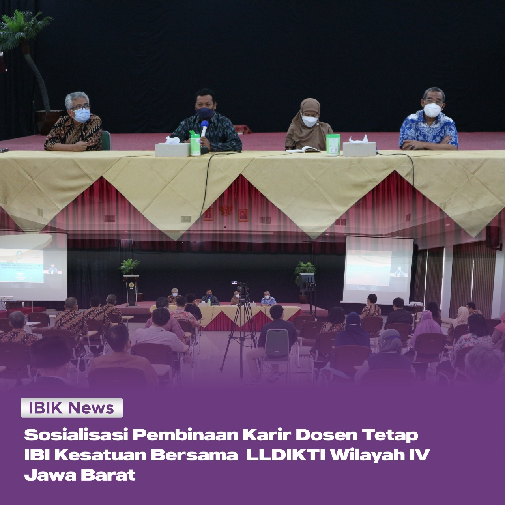

Sosialisasi Pembinaan Karir Dosen Tetap IBI Kesatuan
Kamis, 09 Juni 2022
Pada hari Jumat (22/4), LLDIKTI Wilayah IV melaksanakan kegiatan sosialisasi pembinaan karir dosen tetap IBI Kesatuan di Gedung B – Lantai 6 IBI Kesatuan. Dengan Narasumber Bapak Dr. M. Samsuri, S.Pd., M.T selaku Kepala LLDIKTI Wilayah IV Jawa Barat dan Banten. Kegiatan ini bertujuan untuk memotivasi dosen dalam meningkatkan karirnya sebagai dosen, serta membangun Perguruan Tinggi yang berkualitas untuk menghasilkan lulusan yang berkualitas.

Ternyata, Dr. M. Samsuri, S.Pd., M.T selaku Kepala LLDIKTI Wilayah IV Jawa Barat secara mendadak mengunjungi Kampus IBI Kesatuan. Beliau menyampaikan bahwa laporan Pangkalan Data Pendidikan Tinggi (PDDikti) IBI Kesatuan sangat memuaskan, kepengurusan jenjang kepangkatan dosen IBI Kesatuan sangat baik, serta Program Studi rata-rata terakreditasi sangat baik dengan beberapa Program Studi dengan akreditasi A.
Kegiatan ini dilaksanakan secara hybrid yang dimulai pada pukul 13:30 s.d selesai, dengan dihadiri oleh Prof. Dr. Bambang Pamungkas, Ak., MBA., CA., CPA., CSFA., CFRA selaku Guru Besar sekaligus Ketua Senat IBI Kesatuan, Wakil Rektor 2 & Wakil Rektor 3 IBI Kesatuan, Dekan Fakutas dan Direktur Vokasi IBI Kesatuan, para Ketua Program Studi serta para dosen tetap IBI Kesatuan.
Saat Bapak Samsuri menyampaikan pemaparannya, beliau menyampaikan bahwa lulusan berkualitas harus dibimbing oleh dosen yang juga berkualitas.
“Perguruan Tinggi harus mewujudkan pendidikan berkualitas dan merta bagi seluruh rakyat Indonesia. Dosen harus menjadi mentor, fasilitator, inovator bagi seluruh mahasiswanya.” ujarnya.
“Apabila ingin menjadi dosen profesional yang bisa membantu Perguruan Tinggi menjadi kampus yang berkualitas, maka harus didukung oleh dosen dengan berkualifikasi pendidikan S3.” tambahnya.
Selain itu, beliau juga menjelaskan bahwa pengelolaan Perguruan Tinggi dimulai dari investasi SDM yang berkualitas dan berkuantitas baik dari segi kualifikasi dan juga karir, serta taat azas dan taat mutu.

Kegiatan dilanjutkan dengan sesi tanya jawab dan foto bersama. Semoga kegiatan ini dapat memotivasi seluruh tenaga pendidik untuk membangun Perguruan Tinggi yang lebih baik.